Periwinkle
Periwinkle: A Short History of the Color
Home
History
Gallery
Periwinkle Image Search
A Periwinkle Gallery
Here you'll see images of different shades and formats of periwinkle.
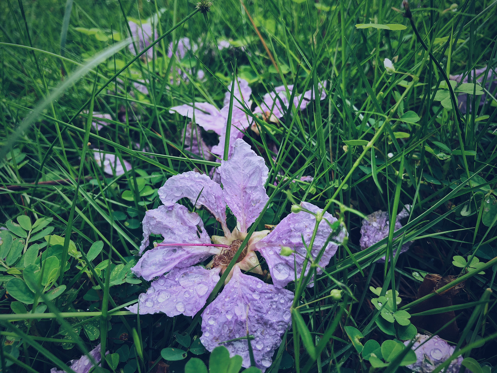 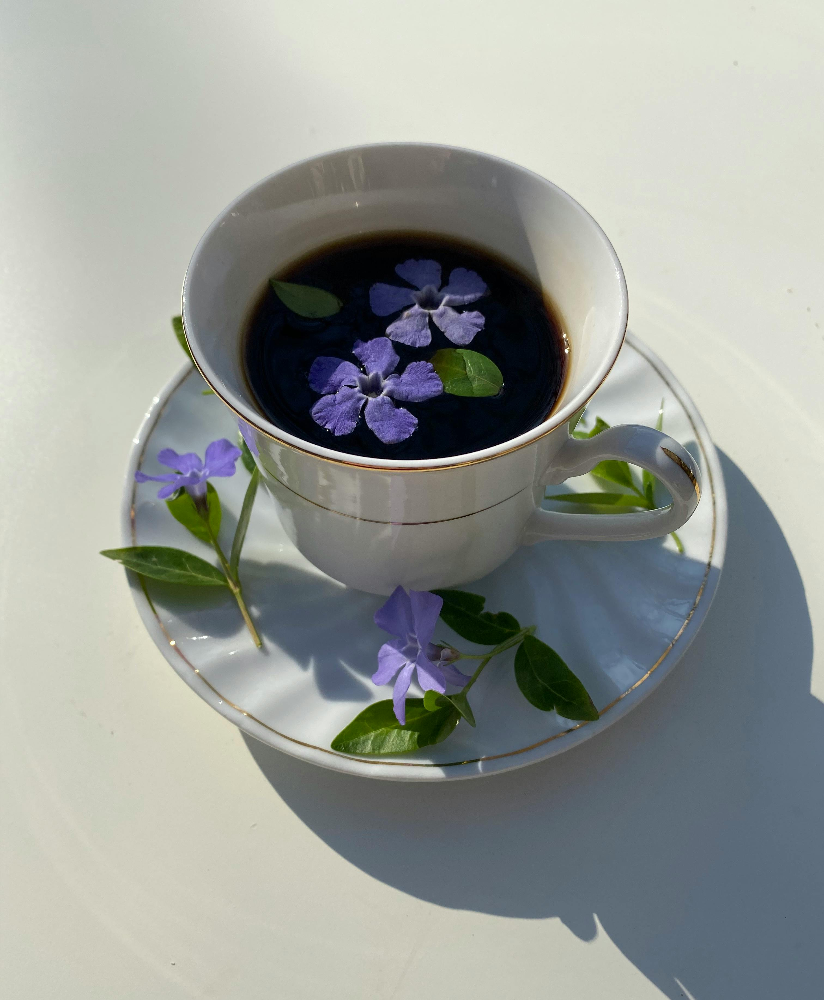 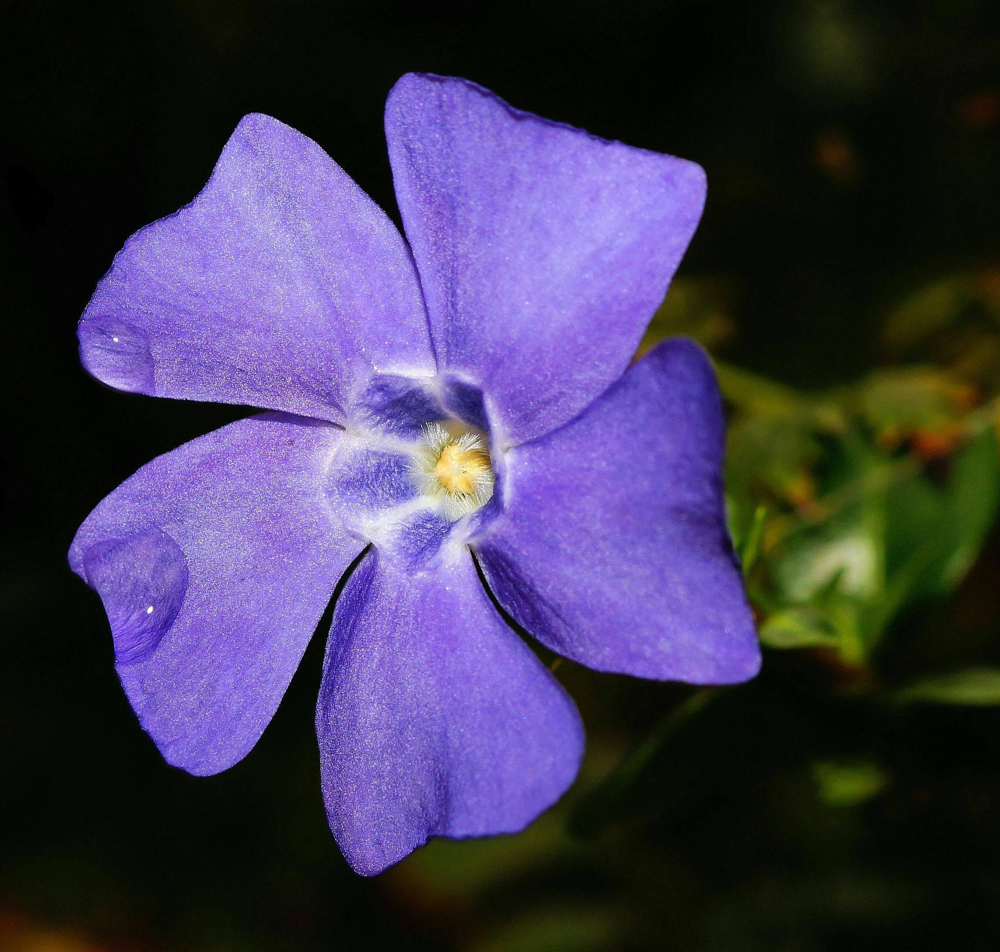
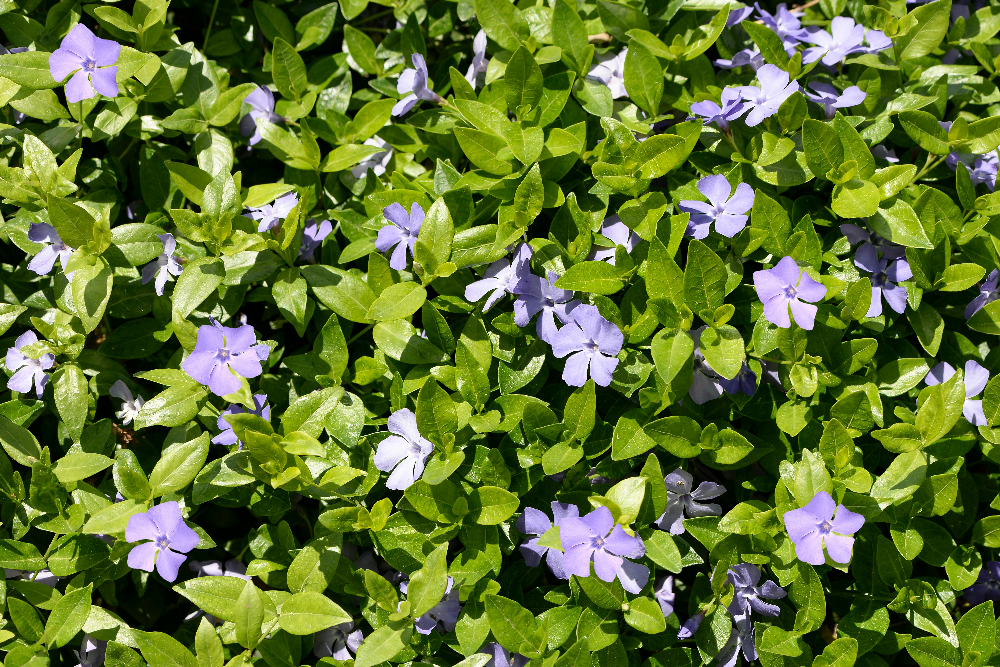
Have more to add? Sign up for submition updates!
Name:
Email:
 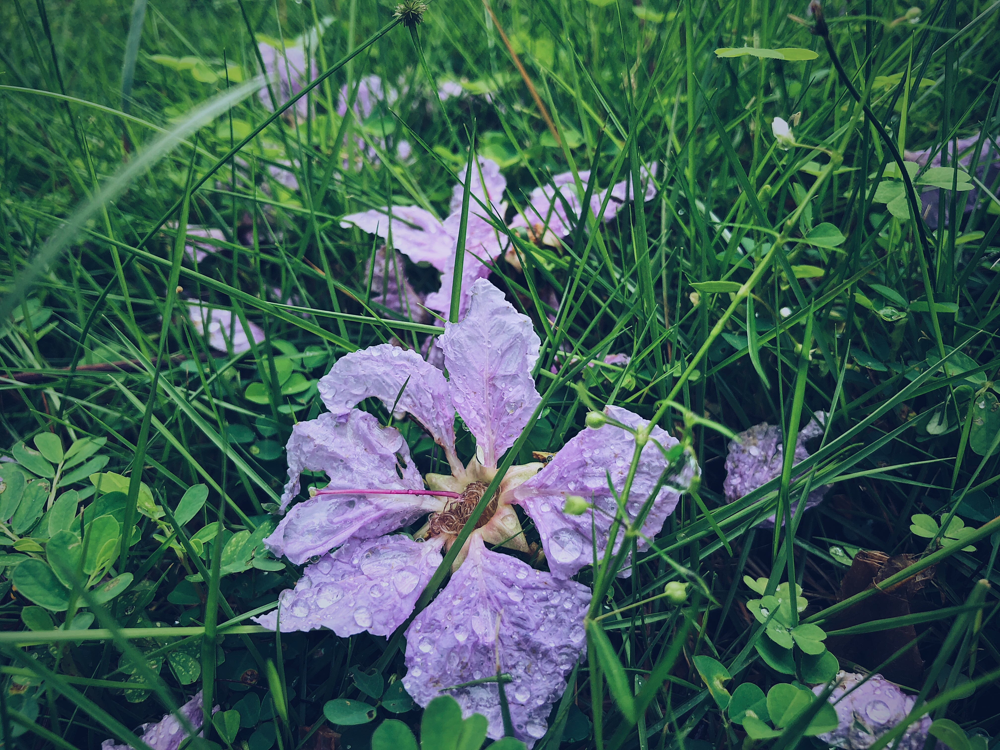
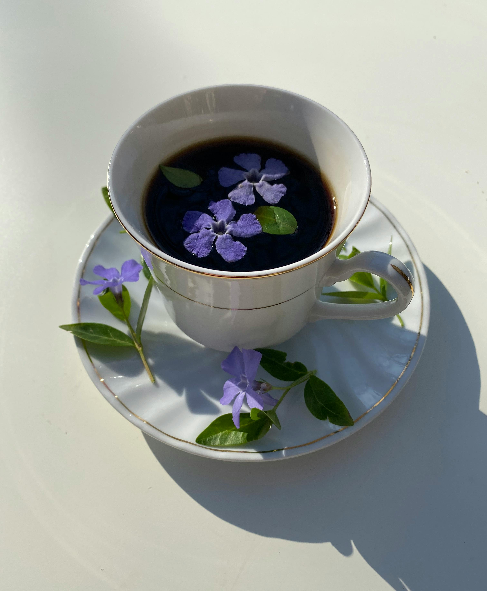
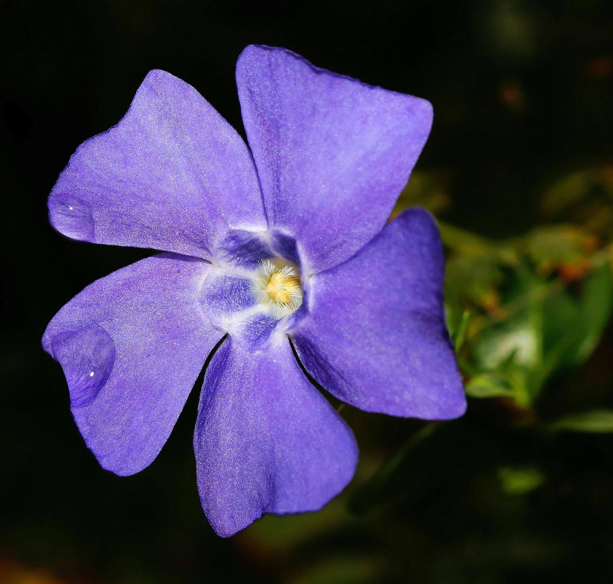
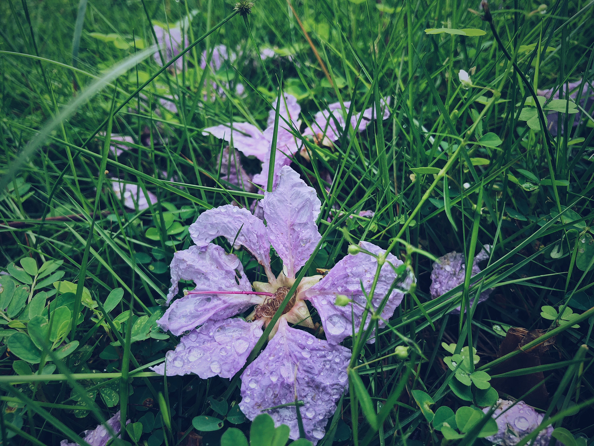
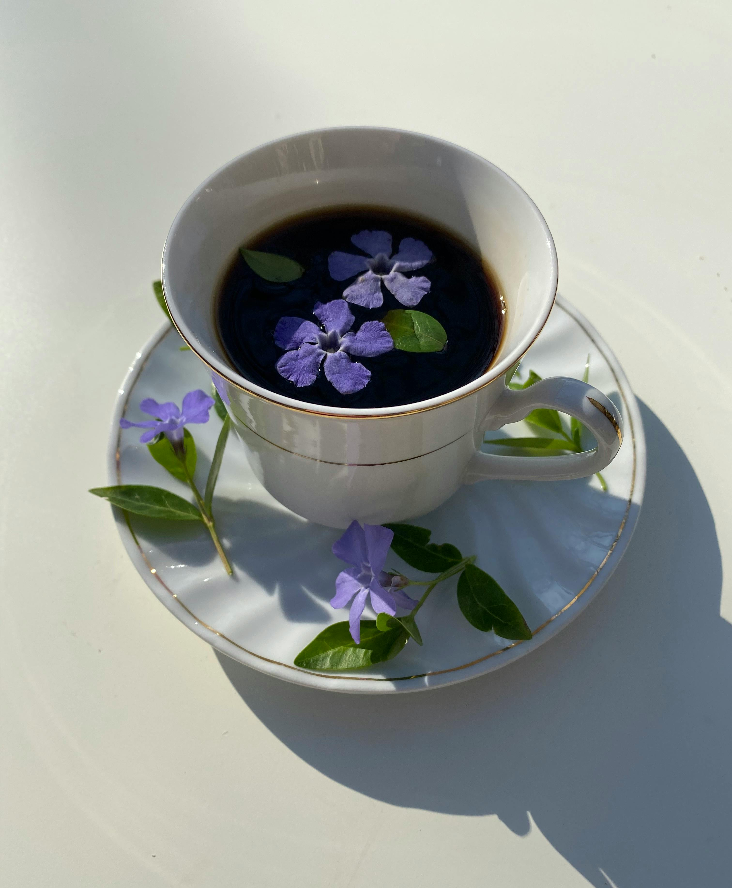
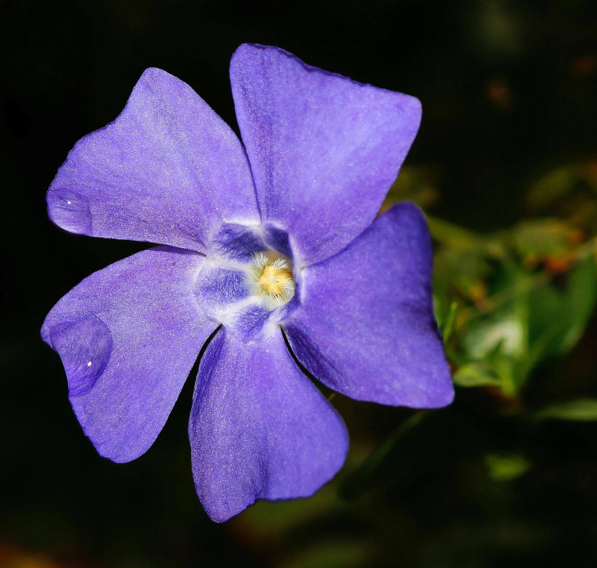
 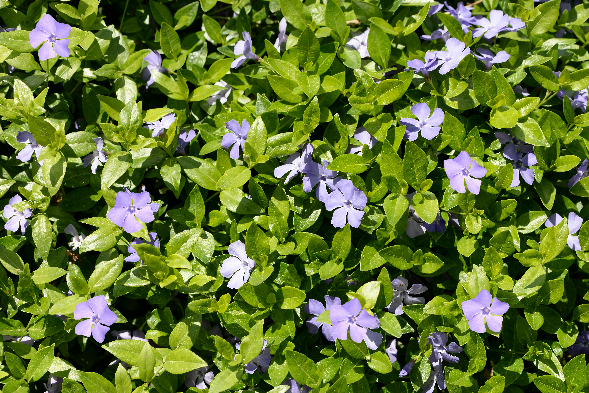
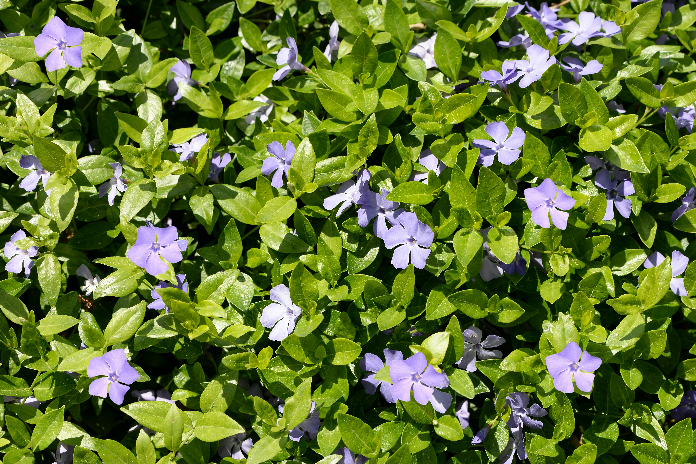